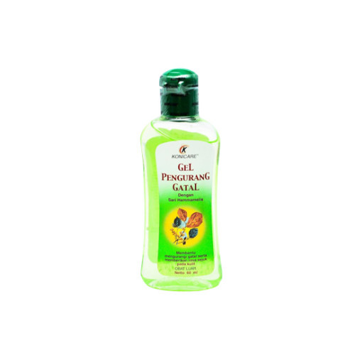

Pengertian Kulit Gatal
Kulit gatal atau pruritus adalah sensasi tidak nyaman pada kulit yang menyebabkan dorongan untuk menggaruk. Gatal ini dapat terjadi di seluruh tubuh atau hanya di bagian tertentu, dan bisa disebabkan oleh berbagai faktor.
Gejala Kulit Gatal
Kulit gatal dapat disertai dengan gejala lain, seperti:
- Kulit kering atau bersisik
- Kemerahan atau ruam
- Pembengkakan atau bintik-bintik kecil
- Luka akibat garukan
Penyebab Kulit Gatal
Kulit gatal dapat disebabkan oleh berbagai faktor, seperti:
- Kulit kering (xerosis)
- Alergi terhadap makanan, obat, atau produk perawatan kulit
- Gigitan serangga, seperti nyamuk atau kutu
- Infeksi kulit, seperti eksim, dermatitis, atau psoriasis
- Penyakit ginjal, hati, atau masalah tiroid
- Penggunaan obat-obatan tertentu yang menyebabkan efek samping gatal
Pencegahan Kulit Gatal
Untuk mencegah kulit gatal, Anda bisa melakukan hal-hal berikut:
- Menjaga kelembapan kulit dengan pelembap setelah mandi
- Hindari penggunaan sabun atau deterjen yang keras
- Kenali dan hindari bahan atau makanan yang memicu alergi
- Gunakan pakaian berbahan lembut seperti katun
- Gunakan humidifier untuk menjaga kelembapan udara di dalam ruangan
Pengobatan Kulit Gatal
Beberapa cara pengobatan kulit gatal, antara lain:
- Krim atau salep anti-gatal yang mengandung hidrokortison atau calamine
- Antihistamin untuk mengatasi gatal akibat alergi
- Kompres dingin untuk meredakan gatal yang parah
- Obat resep dari dokter jika gatal disebabkan oleh kondisi medis tertentu seperti eksim
Caladine Gel Pengurang Gatal
Caladine Gel Pengurang Gatal 50 Ml bermanfaat untuk mengurangi gatal pada kulit dengan memberikan sensasi dingin.
Selengkapnya
Konicare Gel Pengurang Gatal
Konicare Gel Pengurang Gatal bermanfaat untuk memberikan rasa sejuk pada kulit dan mengurangi rasa gatal.
Selengkapnya